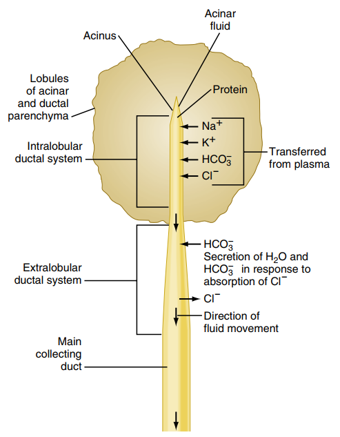
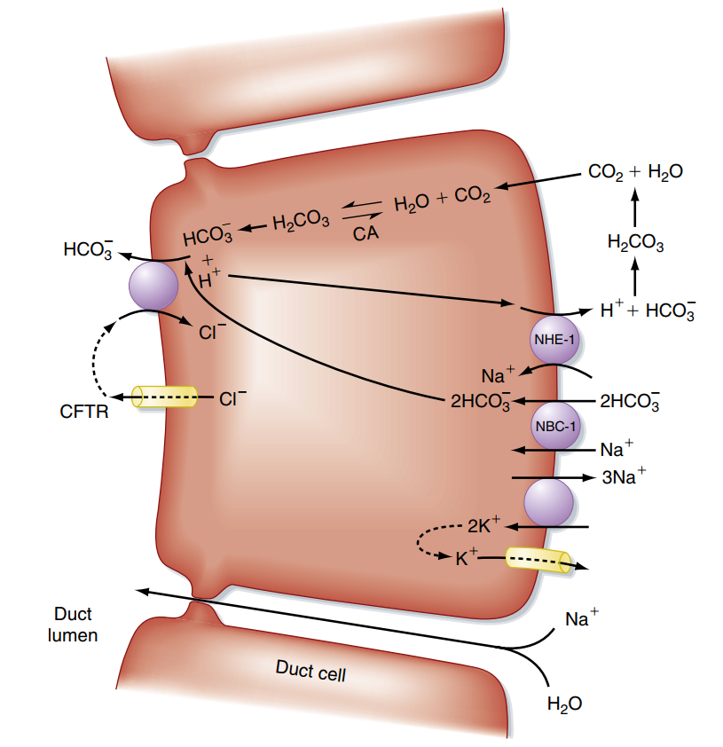
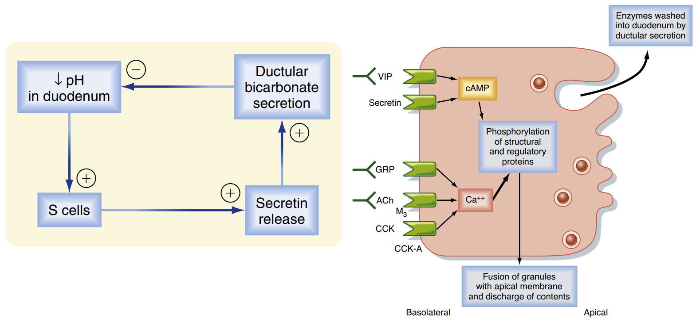
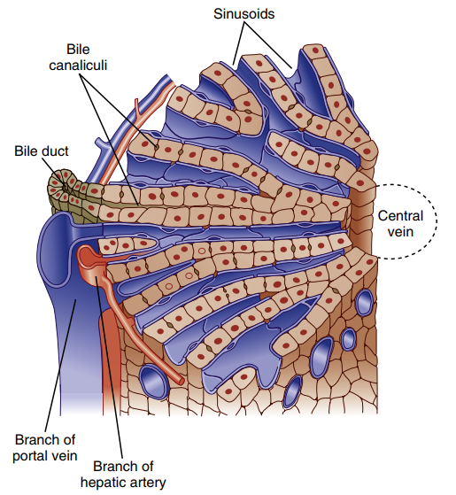
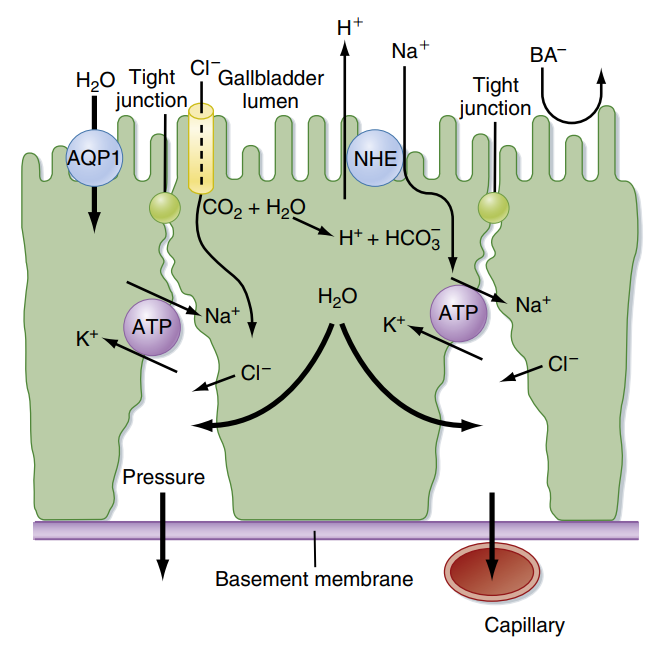
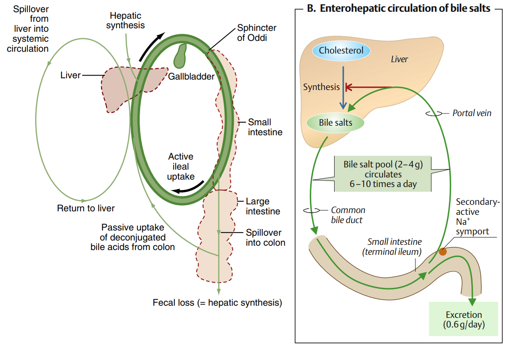
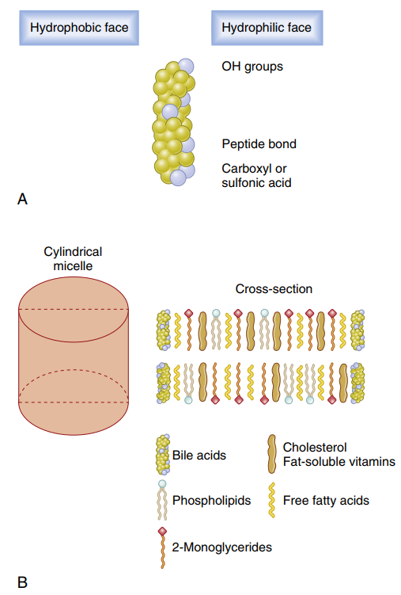
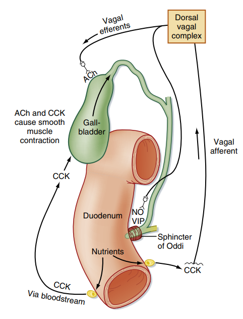

Bài: Sinh lý các tuyến tiêu hóa lớn (Gan - Tụy)
Khám phá chi tiết cấu tạo vi thể, cơ chế bài tiết dịch tụy ngoại tiết, dịch mật, chức năng của muối mật, cơ chế cô đặc tại túi mật, chu trình ruột - gan và sự điều hòa thần kinh - nội tiết của hai tuyến tiêu hóa lớn nhất cơ thể.
Phần I: Sinh lý tiêu hóa tại Tụy (Tụy ngoại tiết)
Tuyến tụy (Pancreas) đóng vai trò trung tâm trong việc tiêu hóa các đại phân tử thức ăn và trung hòa lượng acid clohydric (HCl) từ dạ dày đi xuống. Phần tụy ngoại tiết (chiếm khoảng 80% khối lượng tuyến tụy) có cấu trúc gồm hai thành phần tế bào với các cơ chế và chức năng bài tiết khác biệt.
1. Sự bài tiết enzyme tiêu hóa từ tế bào nang tụy (Acinar cells)
Tế bào nang tụy chịu trách nhiệm tổng hợp, đóng gói vào các hạt chế tiết (zymogen granules) và bài tiết hỗn hợp các enzyme tiêu hóa cực mạnh, có khả năng phân giải cả ba nhóm thức ăn chính:
Amylase tụy phân giải tinh bột (cả sống và chín) cũng như glycogen thành đường đôi maltose và các polymer nhỏ của glucose (oligosaccharide).
Các protease tụy được bài tiết dưới dạng tiền men chưa hoạt động (zymogen) để ngăn cản sự tự tiêu hủy tuyến tụy. Chúng bao gồm: trypsinogen, chymotrypsinogen, proelastase và procarboxypeptidase.
Khi đi vào tá tràng, tiền men trypsinogen gặp enzyme enterokinase (do bờ bàn chải ruột tiết ra) và bị cắt thành trypsin hoạt động. Sau đó, chính trypsin sẽ đóng vai trò hoạt hóa tất cả các tiền men còn lại thành dạng hoạt động (trypsin, chymotrypsin, elastase, carboxypeptidase).
Lipase tụy là enzyme chủ lực thủy phân triglyceride thành các acid béo tự do và 2-monoglyceride. Men này hoạt động cần có sự hiện diện của colipase (cũng do tụy tiết ra) và muối mật. Tụỵ còn tiết ra phospholipase A2 cắt acid béo khỏi phospholipid và cholesterol esterase để thủy phân ester của cholesterol.
2. Sự bài tiết HCO3- từ tế bào ống tuyến (Duct cells)
Tế bào ống tuyến bài tiết dịch lỏng kiềm tính chứa nồng độ bicarbonate (HCO3-) cao (đạt tới 140 mEq/L, gấp khoảng 5 lần nồng độ trong huyết tương), với thể tích khoảng 1.2 – 1.5 lít mỗi ngày.
Cơ chế phân tử:
-
Tạo Bicarbonate trong tế bào Bên trong tế bào ống tuyến, CO2 sinh ra từ chuyển hóa hoặc khuếch tán từ máu vào kết hợp với H2O nhờ enzyme Carbonic Anhydrase (CA) tạo thành H2CO3. Axit này nhanh chóng phân ly thành H+ và HCO3-.
-
Bài xuất chủ động qua màng đỉnh Tại màng đỉnh (hướng về lòng ống tụy), HCO3- được đẩy ra ngoài qua kênh trao đổi anion Cl-/HCO3-. Để kênh này hoạt động liên tục, kênh Cl- mang tên CFTR (Cystic Fibrosis Transmembrane Conductance Regulator) phải liên tục bơm Cl- ra lòng ống để cung cấp Cl- cho bơm trao đổi đi ngược trở lại vào trong tế bào.
-
Trung hòa axit màng đáy bên Ion H+ được bài xuất ra màng đáy bên (vào máu) thông qua kênh trao đổi Na+/H+ (NHE1) hoặc bơm H+-ATPase chủ động. Điều này giúp trung hòa tính base trong máu tĩnh mạch tụy. Na+ đi vào tế bào sẽ được đẩy ra ngoài bằng bơm Na+/K+-ATPase. Nước đi theo dòng thẩm thấu do Na+ và HCO3- tạo ra qua các liên kết khe để vào lòng ống.
3. Điều hòa bài tiết dịch tụy
Sự bài tiết dịch tụy được điều hòa bởi cả cơ chế thần kinh và nội tiết, chia làm 3 giai đoạn: Tâm lý (Cephalic phase), Dạ dày (Gastric phase) và Ruột (Intestinal phase). Trong đó, giai đoạn ruột chiếm tới 70-80% tổng lượng dịch bài tiết, chịu sự điều hòa của hai hormone chính do niêm mạc tá tràng tiết ra:
- Secretin: Được tiết ra bởi tế bào S khi dưỡng trấp acid (pH < 4.5) đi vào tá tràng. Secretin theo máu đến kích thích mạnh mẽ các tế bào ống tuyến tụy tăng tiết dịch giàu nước và HCO3- nhằm trung hòa acid dịch vị nhanh chóng.
- Cholecystokinin (CCK): Được bài tiết bởi tế bào I khi tá tràng tiếp nhận các sản phẩm tiêu hóa mỡ (acid béo chuỗi dài) và protein (acid amin, peptide). CCK theo máu đến kích thích tế bào nang tụy giải phóng ồ ạt các zymogen chứa enzyme tiêu hóa.
- Dây thần kinh X (Phế vị): Acetylcholine phóng thích từ tận cùng sợi X kích thích cả tế bào nang tụy tiết men và tế bào ống tiết HCO3-, tạo tác dụng hiệp đồng cộng lực với secretin và CCK.



Phần II: Sinh lý tiêu hóa tại Gan và Hệ thống Mật
Gan không trực tiếp bài tiết các enzyme tiêu hóa để phân giải liên kết hóa học, nhưng gan sản xuất và bài tiết dịch mật – một dung dịch sinh học cực kỳ quan trọng và không thể thay thế để nhũ tương hóa và hấp thu chất béo (lipid) cùng các vitamin tan trong dầu.
1. Cấu trúc tiểu thùy gan và sự tạo mật
Gan sản xuất khoảng 500 – 1.000 mL mật mỗi ngày. Mật được tạo ra liên tục bởi tế bào gan và bài tiết vào các vi ống mật (bile canaliculi) nằm giữa các màng tiếp giáp của hai tế bào gan kề nhau. Dòng mật chảy ngược chiều với dòng máu trong mao mạch kiểu xoang (sinusoids) để đổ về các ống mật nhỏ ở khoảng cửa (Portal triads), từ đó gom về ống gan phải và ống gan trái để tạo thành ống gan chung.
Thành phần của mật: Nước chiếm tỉ lệ lớn nhất, phần chất hòa tan gồm có muối mật (bile salts - chiếm 50% lượng chất hòa tan), lecithin (phosphatidylcholine), cholesterol tự do, sắc tố mật (bilirubin liên hợp) và các ion điện giải. Muối mật được tế bào gan tổng hợp chủ yếu từ tiền chất là cholesterol, tạo thành acid mật sơ cấp (acid cholic, acid chenodeoxycholic) rồi được liên hợp với glycine hoặc taurine để nâng cao tính hòa tan trong nước trước khi bài xuất vào mật dưới dạng muối mật Natri/Kali.
2. Cô đặc và dự trữ mật tại túi mật
Giữa các bữa ăn (trạng thái đói), cơ vòng Oddi ở bóng tá tràng co thắt đóng kín, khiến dịch mật chảy từ ống mật chủ đi ngược vào dự trữ ở túi mật (thể tích tối đa chỉ khoảng 30 – 60 mL).
Để chứa được toàn bộ lượng mật sản xuất trong 12 giờ của gan, niêm mạc túi mật thực hiện quá trình cô đặc mật cực mạnh từ 5 đến 20 lần bằng cách:
- Màng đỉnh tế bào niêm mạc túi mật chủ động tái hấp thu ion Na+ (qua kênh trao đổi Na+/H+) và Cl- (qua kênh trao đổi Cl-/HCO3-).
- Sự di chuyển của các ion kéo theo nước đi thụ động qua tế bào qua kênh Aquaporin-1 (AQP1) và qua các liên kết khe để vào máu.
- Kết quả làm mật túi mật trở nên vô cùng đậm đặc muối mật, lecithin và cholesterol, đồng thời pH mật túi mật giảm nhẹ do sự bài tiết H+. Sự mất cân bằng nồng độ các chất hòa tan này (đặc biệt là tỉ lệ cholesterol tăng quá cao) là nguồn gốc cơ chế tạo sỏi mật.
3. Chức năng tiêu hóa của muối mật
Muối mật đảm nhận hai vai trò sinh lý then chốt giúp cơ thể hấp thu lipid:
- Nhũ tương hóa chất béo (Emulsification): Do muối mật có tính lưỡng cực (đầu nhân steroid kỵ nước gắn chặt vào giọt lipid lớn, đầu acid amin phân cực ưa nước quay ra ngoài hướng về dịch lòng ruột), chúng làm giảm sức căng bề mặt của các giọt mỡ. Kết hợp với cử động nhào trộn của ruột non, các giọt mỡ lớn bị đánh tan thành vô số hạt nhũ tương hóa siêu nhỏ (kích thước ~1 µm), làm tăng diện tích tiếp xúc của mỡ với men Lipase tụy lên hàng ngàn lần.
- Tạo hạt Micelle vận chuyển chất béo: Khi Lipase cắt triglyceride thành acid béo và monoglyceride, các phân tử muối mật tự sắp xếp xếp vòng quanh bao bọc chúng cùng với cholesterol tự do và phospholipid tạo thành các hạt Micelle hỗn hợp. Hạt micelle hòa tan được trong nước, vận chuyển chất béo xuyên qua lớp dịch không di động bám niêm mạc ruột để tiếp cận bờ bàn chải giúp lipid khuếch tán vào tế bào ruột.
4. Chu trình ruột - gan của muối mật (Enterohepatic Circulation)
Lượng muối mật bài tiết xuống ruột không bị thải bỏ vô ích. Khoảng 94 - 95% lượng muối mật được tái hấp thu chủ động tại đoạn cuối hồi tràng thông qua kênh đồng vận chuyển Na+-muối mật (ASBT).
Muối mật theo máu tĩnh mạch cửa trở lại gan, được tế bào gan bắt giữ hiệu quả và tái bài tiết vào mật. Mỗi phân tử muối mật trung bình tuần hoàn khoảng 6 đến 10 lần một ngày (chu trình ruột - gan). Nhờ vậy, gan chỉ cần tổng hợp mới một lượng rất nhỏ (~5-6% lượng muối mật tống xuất) để bù đắp vào phần muối mật bị vi khuẩn đại tràng biến đổi và đào thải theo phân.
5. Điều hòa bài tiết và tống xuất mật
Hoạt động bài tiết mật chịu sự điều hòa phối hợp chặt chẽ của các hormone tá tràng:
- Cholecystokinin (CCK): Là yếu tố kích thích tống mật mạnh nhất. Khi lipid và protein đi vào tá tràng, CCK được phóng thích vào máu gây co bóp mạnh mẽ cơ trơn thành túi mật đồng thời làm giãn cơ vòng Oddi để dịch mật đậm đặc đổ vào tá tràng.
- Secretin: Kích thích biểu mô đường mật tăng tiết dung dịch giàu nước và kiềm HCO3-, giúp tăng lưu lượng mật và hỗ trợ trung hòa acid dạ dày ở tá tràng.
- Muối mật trong tĩnh mạch cửa: Nồng độ muối mật hồi lưu về gan cao chính là chất kích thích gan tăng tiết thêm mật mới (cơ chế feedback dương tính nhẹ).





Phần III: Mối liên hệ Lâm sàng & Ứng dụng Y khoa
Hiểu biết về cơ chế hoạt động của gan và tụy ngoại tiết giúp lý giải các bệnh cảnh cấp cứu và mãn tính nghiêm trọng trên lâm sàng:
🩺 1. Viêm tụy cấp (Acute Pancreatitis) - Hiện tượng tự tiêu ngót tuyến tụy
Bình thường, các men tiêu hóa protein của tụy được bài tiết dưới dạng tiền men không hoạt động (zymogen) và được bảo vệ bởi chất ức chế trypsin (trypsin inhibitor) có sẵn trong tế bào nang.
Khi có tác nhân kích thích gây tắc nghẽn ống tụy (như sỏi mật kẹt ở bóng Vater) hoặc do rượu/chấn thương làm tổn thương tế bào nang tụy, sự bài tiết bị ứ nghẽn. Các hạt zymogen hòa màng với lysosome chứa enzyme cathepsin B, hoạt hóa sớm trypsinogen thành trypsin hoạt động ngay bên trong nhu mô tụy. Trypsin lập tức hoạt hóa tất cả các protease còn lại (elastase gây phá hủy mạch máu, phospholipase A2 gây hủy hoại màng tế bào tụy) dẫn đến quá trình tự tiêu ngót (autodigestion) tụy, gây hoại tử nhu mô tụy cấp tính, tràn dịch ổ bụng và sốc nhiễm độc nguy hiểm tính mạng.
🩺 2. Bệnh Xơ nang (Cystic Fibrosis - CF) và Suy tụy ngoại tiết
Xơ nang là một bệnh lý di truyền lặn do đột biến gen mã hóa kênh vận chuyển clo CFTR nằm trên màng tế bào biểu mô.
Tại tế bào ống tuyến tụy, sự thiếu hụt hoặc bất thường chức năng kênh CFTR khiến việc bơm Cl- ra ngoài lòng ống bị đình trệ. Mất Cl- làm bơm trao đổi Cl-/HCO3- không thể hoạt động, dẫn đến ngừng bài tiết ion HCO3- và nước vào dịch tụy. Dịch tụy trở nên cực kỳ cô đặc, quánh đặc và kết tủa làm tắc nghẽn toàn bộ các ống dẫn tụy nhỏ. Lâu ngày, sự tắc nghẽn này gây xơ hóa tuyến tụy tiến triển, làm mất hoàn toàn chức năng của các tế bào nang tụy (suy tụy ngoại tiết), dẫn đến hội chứng kém hấp thu chất béo và suy dinh dưỡng nặng nề ở trẻ em.
🩺 Ứng dụng Y khoa Cao lâm sàng (High-Yield Clinical Correlation)
- Sỏi mật (Gallstones) và Cơ chế thăng bằng Tam giác Admirand-Small: Dịch mật giữ được trạng thái lỏng nhờ sự cân bằng tỷ lệ tối ưu giữa 3 thành phần chính: muối mật, lecithin và cholesterol (được biểu diễn bằng tam giác Admirand-Small). Do cholesterol hoàn toàn kỵ nước, nó chỉ được giữ hòa tan trong dịch mật bằng cách giấu vào lõi các hạt micelle cấu tạo từ muối mật và lecithin. Nếu gan tăng bài tiết quá mức cholesterol (do béo phì, dùng thuốc tránh thai) hoặc túi mật giảm bài tiết/kém hấp thu muối mật (do viêm/cắt hồi tràng), cholesterol sẽ bị bão hòa, kết tủa tạo thành các tinh thể cholesterol nhân sỏi mật.
Tài liệu tham khảo (AMA Citation style)
- Mai PT. Sinh lý học y khoa. Nhà xuất bản Đại học Quốc gia Thành phố Hồ Chí Minh; 2024.
- Koeppen BM, Stanton BA. Berne and Levy Physiology. 8th ed. Elsevier; 2024.
- Barrett KE, Barman SM, Boitano S, Brooks HL. Ganong's Review of Medical Physiology. 24th ed. McGraw-Hill Medical; 2012.
- Đặng HAT. Sinh lý TIÊU HOÁ YDS 2025. [Video recording]. Bs. Linh O'la Scar; 2025.
- Silbernagl S, Despopoulos A. Color Atlas of Physiology. 6th ed. Thieme; 2009.